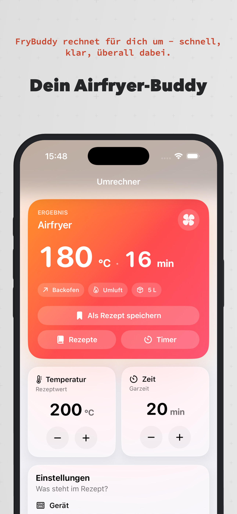
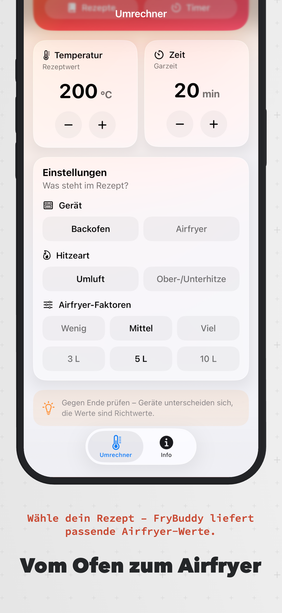
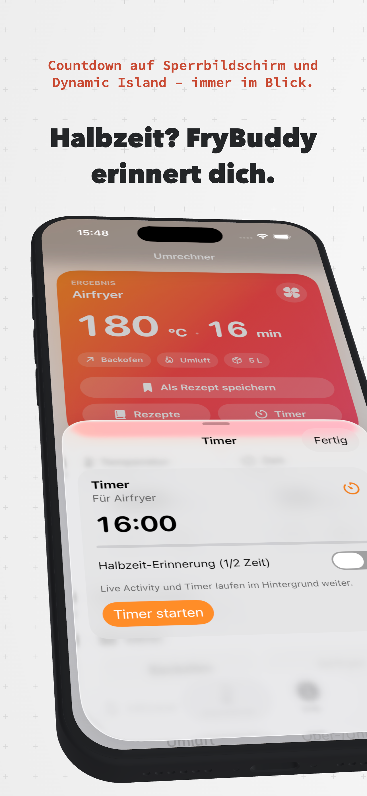
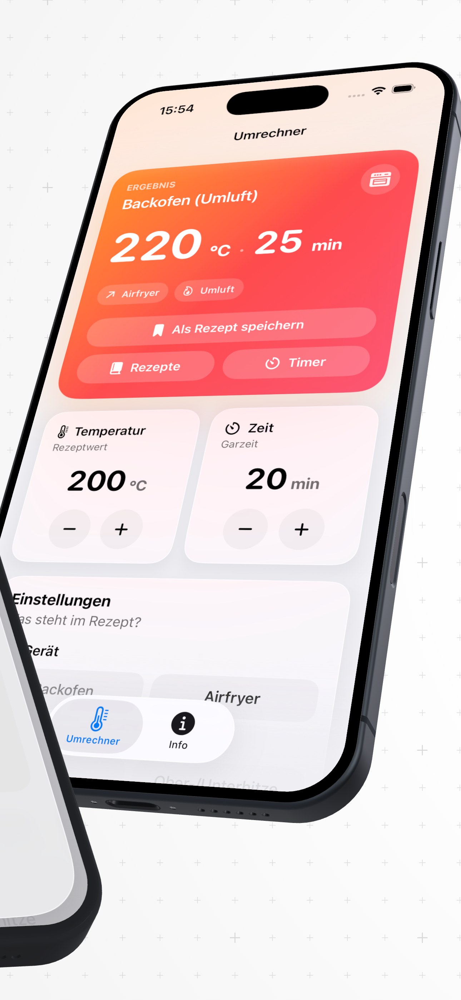
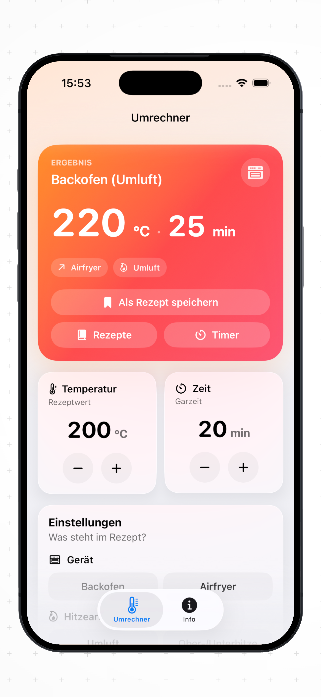
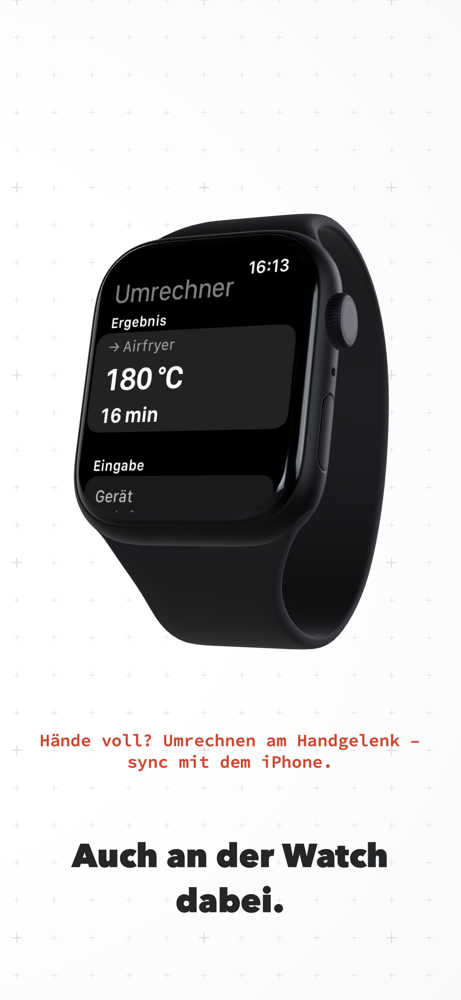
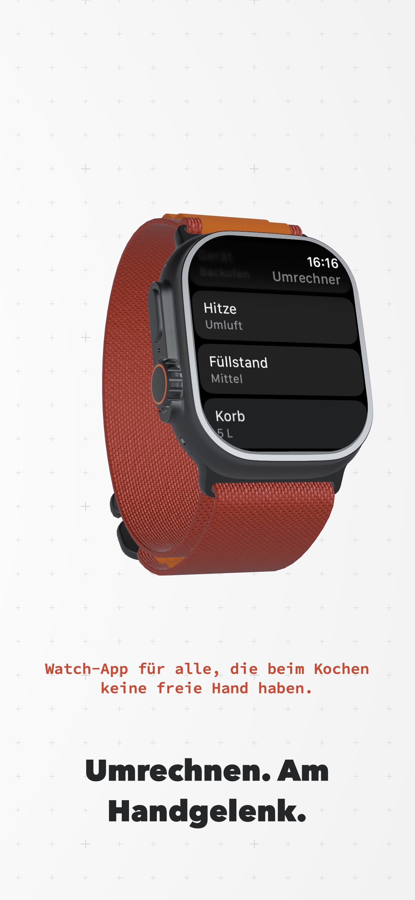

↔
Backofen ↔ Airfryer
Wähle die Eingabe – FryBuddy berechnet das Ziel sofort, in beide Richtungen.
Für iPhone, iPad & Apple Watch
FryBuddy rechnet Temperatur und Garzeit vom Backofen auf deinen Airfryer um – direkt auf dem Home Screen, in der App und auf der Watch.

App Store Design
Die offiziellen App-Store-Screenshots – vom Umrechner über Timer bis zur Apple Watch.






Alles drin
Wähle die Eingabe – FryBuddy berechnet das Ziel sofort, in beide Richtungen.
Umluft (−20 °C) oder Ober-/Unterhitze (−40 °C) – passend zu deinem Rezept.
Füllstand und Korbgröße fließen ein – du musst nichts selbst umrechnen.
Der volle Umrechner auf dem Home Screen – Temperatur, Zeit und Modus direkt einstellbar.
Werte per Stepper einstellen – Watch Connectivity hält iPhone und Widget synchron.
Klares Liquid-Glass-UI, Onboarding beim ersten Start und Dark Mode out of the box.
So funktioniert's
Backofen-Temperatur, Garzeit und Hitzeart aus deinem Rezept wählen.
Füllstand (wenig/mittel/viel) und Korbgröße (3 L / 5 L / 10 L) einstellen.
Airfryer-Werte ablesen – in der App, im Widget oder auf der Watch.
Jetzt starten
Installiere die App, füge optional das Widget hinzu und sync deine Werte mit der Apple Watch. iOS 17+, iPadOS 17+ und watchOS 10+.